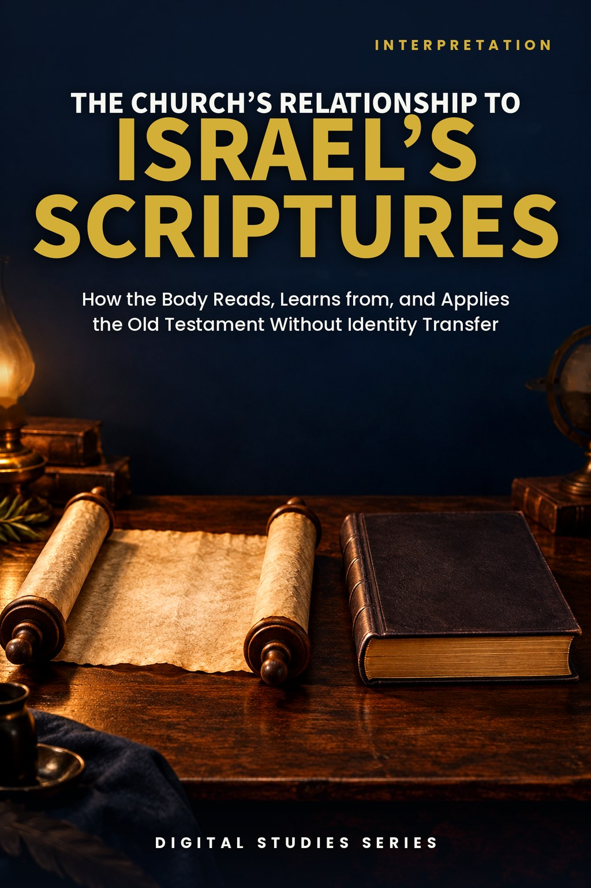
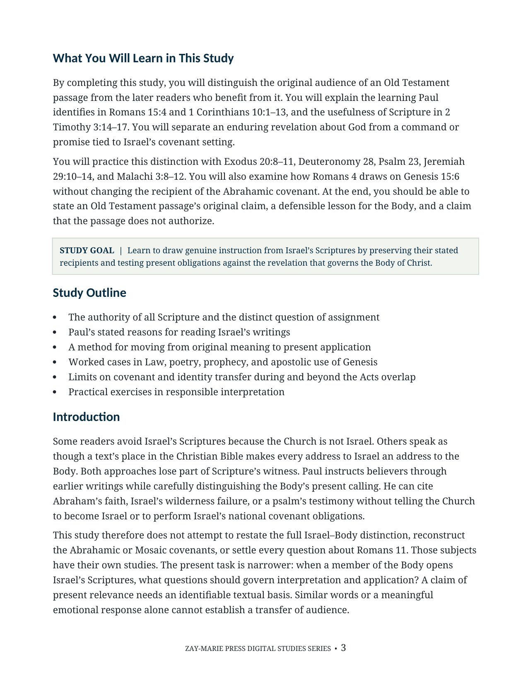
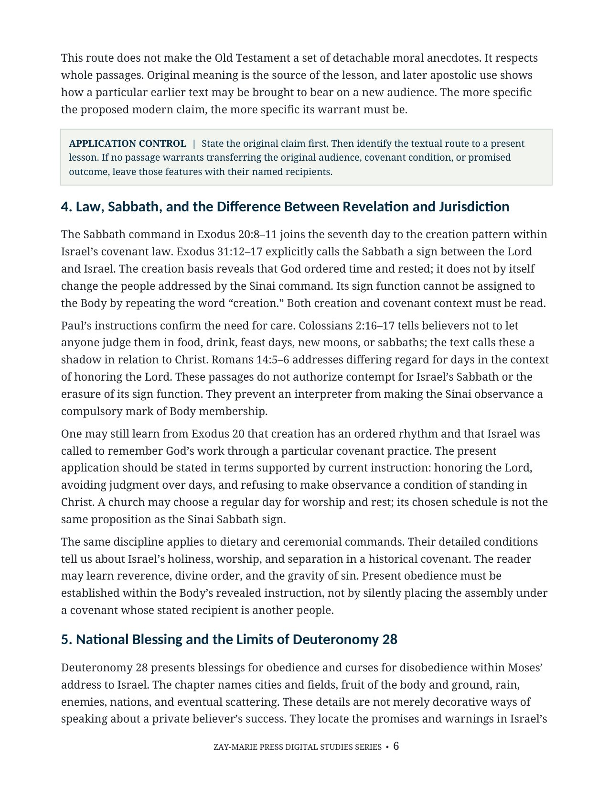
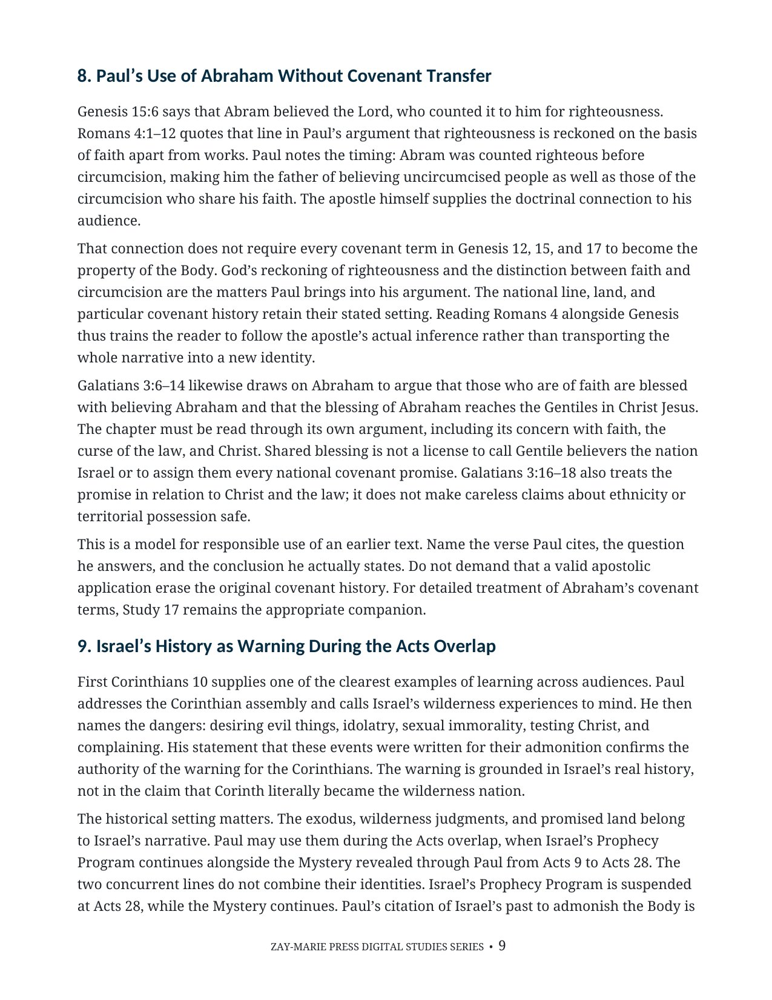
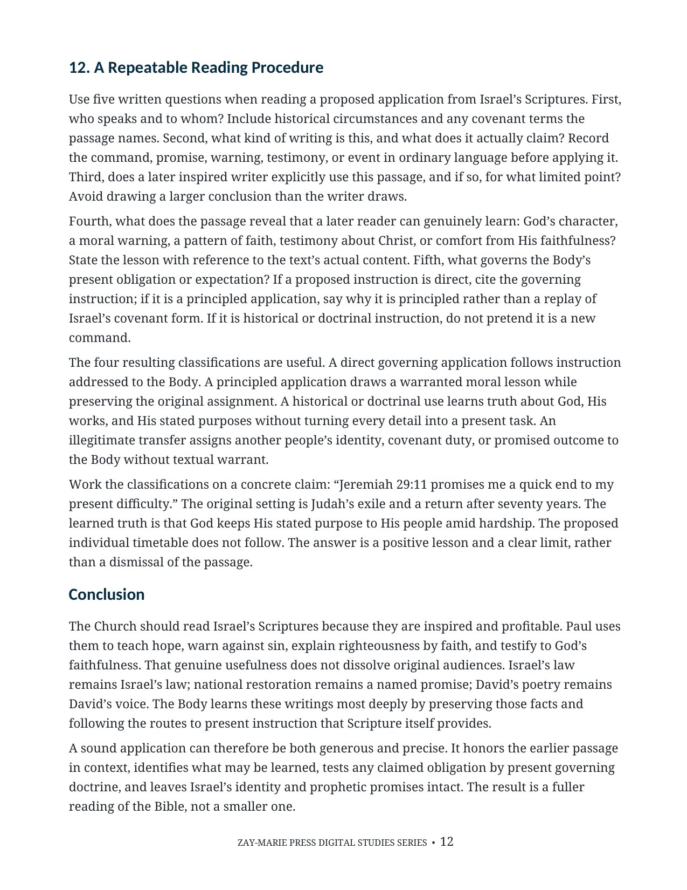

The Church’s Relationship to Israel’s Scriptures
How the Body Reads, Learns from, and Applies the Old Testament Without Identity Transfer
A focused method for receiving Israel’s Scriptures as inspired instruction
Paul says earlier writings were given for our learning, and Israel’s history warns and instructs believers. Those benefits do not make the Body the original recipient of Israel’s covenants, national promises, or prophetic restoration.
This study works through Law, poetry, prophecy, and Paul’s use of Genesis. For each passage, identify its first audience, the lesson Scripture warrants, and the present instruction that governs the Body.
Profitable Scripture With Its Audience Intact
The Church should read Israel’s Scriptures closely. They reveal God’s character and works, testify to Christ, expose sin, and supply hope and warning. Their value is clearest when the reader preserves what God said, to whom He said it, and in what setting.
Study 39 gives a repeatable way to move from original meaning to valid present application. It tests common claims drawn from Sabbath, national blessing, exile, tithes, and the Psalms against Paul’s actual uses and governing instruction.
This is not a study of the Abrahamic covenant’s own terms, which Study 17 establishes in Genesis, nor of Paul’s specific uses of Abraham’s history, which Study 40 traces as a worked example, nor of the parallel question for Acts narratives, which Study 38 answers on its own terms. Its task is broader: to supply the repeatable method itself — preserving what God said, to whom, and in what setting — that each of those studies applies to its own passage.
How These Studies Relate
Study 39 gives a method for learning from Israel’s Scriptures while retaining their original audience and covenant setting.
Study 17 — The Abrahamic Covenant Practice the method on the Abrahamic covenant in Genesis: identify its line, national promises, and blessing before claiming present application.
Study 40 — Who Is Abraham’s Seed? See how Paul uses that history in Romans and Galatians; his specific arguments provide a worked example of learning from Israel’s Scriptures without transferring Israelite identity.
Study 38 — Why Acts Is Not a Universal Experience Manual Apply related audience and authority questions to events narrated in Acts, where the issue is whether an action creates a present obligation.
Move From Original Meaning to Warranted Application
All Scripture Is Profitable
Read Romans 15:4, 1 Corinthians 10, and 2 Timothy 3 for the particular benefits Paul draws from earlier writings.
Original Audience and Genre
Identify the people, covenant setting, literary form, and stated claim before moving to present application.
Law and National Promise
Examine Sabbath observance and Deuteronomy’s national blessings without assigning their covenant terms to the Body.
Poetry and Prophetic Hope
Learn from Psalm 23 and Jeremiah’s letter while respecting David’s voice and Judah’s promised return.
Paul’s Use of Abraham
Follow Romans 4 and Galatians 3 where Paul draws a point about faith and blessing from Genesis.
Responsible Application
State an original claim, valid lesson, governing present instruction, and excluded identity or promise transfer.
Compare the Earlier Text and Its Apostolic Use
2 Timothy 3:14–17
All Scripture is God-breathed and profitable for teaching, correction, and training.
Romans 15:1–7
Earlier writings furnish learning, endurance, encouragement, and hope within Paul’s argument.
1 Corinthians 10:1–14
Israel’s wilderness history warns the Corinthians without changing their identity.
Exodus 20:8–11; 31:12–17
The Sabbath command and sign have an identified covenant audience.
Deuteronomy 28
National blessings and curses must be read within Moses’ address to Israel.
Psalm 23; Jeremiah 29:4–14
Poetic trust and the exiles’ promised return provide distinct kinds of instruction.
Genesis 15:6; Romans 4:1–12
Paul draws a precise argument about faith and righteousness from Abraham’s history.
Malachi 3:8–12; 2 Corinthians 8–9
Compare Israel’s tithe and storehouse setting with Paul’s instruction about giving.
Written for Our Learning
“A passage may be written for our learning without being addressed to us as its original covenant recipient.”
The study draws genuine instruction from earlier writings while keeping each passage’s original claim and audience visible.
Preview the Study Before You Purchase
Click any page to enlarge it for reading.
{kind=link}

Learning Outcomes and Study Goal
See the study’s reader outcomes, central aim, and route through Israel’s Scriptures.
{kind=link}

Law and Sabbath
Review the application control and the Sabbath’s original covenant setting.
{kind=link}

Paul’s Use of Abraham
Follow Paul’s inference from Genesis while keeping the covenant history intact.
{kind=link}

A Reading Procedure
Use written questions to classify direct, principled, and historical applications.
A Focused Study for
Careful Reading and Responsible Application
Focused Biblical Study
A sustained treatment of how Israel’s Scriptures instruct the Body without changing their original recipients.
Twelve Teaching Sections
Follow the argument from scriptural authority through Law, poetry, prophecy, Pauline use, and a reading procedure.
Worked Passage Readings
Apply the method to Sabbath, Deuteronomy 28, Psalm 23, Jeremiah 29, Abraham, and giving.
Apostolic Controls
Test proposed present obligations against the use Paul actually makes of earlier writings.
Key Distinctions
Keep audience, authority, participation, analogy, and hope clear as passages move into application.
Scripture-Tracing Exercise
Read paired passages in context and record both warranted lessons and excluded transfers.
Guided Further Study
Investigate additional passages with assigned observations and concise written conclusions.
Digital PDF
A formatted resource for careful reading, teaching preparation, and personal study.
The Church’s Relationship to Israel’s Scriptures
Digital PDF · 16 Pages · For personal use
Want More Than a Focused Study?
Digital Studies examine particular biblical subjects and difficult passages. The 40-lesson Biblical Hermeneutics course teaches a complete, repeatable method for establishing meaning in context, determining proper assignment, and making responsible application.